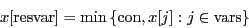
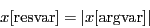
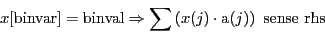
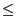
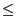
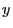

Model variables store optimization problems (as described in the
problem statement).
Models can be built in a number of ways. You can
populate the appropriate fields of the
model struct using standard MATLAB routines.
You can also read a model from a file, using
gurobi_read.
A few API functions (
gurobi_feasrelax and
gurobi_relax) also return models.
Note that all vector fields within the model variable must be dense vectors, all matrix fields must be
sparse matrices, and all strings, names, etc. must be
char arrays.
The following is an enumeration of all of the fields of the
model argument that Gurobi will take into account when
optimizing the model:
Commonly used fields:
- A
- The linear constraint matrix.
- obj (optional)
- The linear objective vector (the c
vector in the
problem statement).
When present, you must specify one value for each column of
A. When absent, each variable has a default objective
coefficient of 0.
- sense (optional)
- The senses of the linear constraints. Allowed
values are '=', '<', or '>'.
You must specify one value for each row of A, or
a single value to specify that all constraints have the same sense.
When absent, all senses default to '<'.
- rhs (optional)
- The right-hand side vector for the linear
constraints (
 in the
problem statement).
You must specify one value for each row of A. When absent,
the right-hand side vector defaults to the zero vector.
in the
problem statement).
You must specify one value for each row of A. When absent,
the right-hand side vector defaults to the zero vector.
- lb (optional)
- The lower bound vector. When present, you must
specify one value for each column of A. When absent, each
variable has a default lower bound of 0.
- ub (optional)
- The upper bound vector. When present, you must
specify one value for each column of A. When absent, the
variables have infinite upper bounds.
- vtype (optional)
- The variable types. This vector is used to
capture variable integrality constraints. Allowed values are
'C' (continuous), 'B' (binary), 'I' (integer), 'S' (semi-continuous), or 'N'
(semi-integer). Binary variables must be either 0 or 1. Integer
variables can take any integer value between the specified lower and
upper bounds. Semi-continuous variables can take any value between
the specified lower and upper bounds, or a value of zero.
Semi-integer variables can take any integer value between the
specified lower and upper bounds, or a value of zero. When present,
you must specify one value for each column of A, or a
single value to specify that all variables have the same type. When
absent, each variable is treated as being continuous. Refer to
this section
for more information on variable types.
- modelsense (optional)
- The optimization sense. Allowed values
are 'min' (minimize) or 'max' (maximize).
When absent, the default optimization sense is minimization.
- modelname (optional)
- The name of the model. The name appears
in the Gurobi log, and when writing a model to a file.
- objcon (optional)
- The constant offset in the objective function
(
 in the
problem statement).
in the
problem statement).
- varnames (optional)
- The variable names vector. A cell array.
When present, each element of this vector defines the name of a
variable. You must specify a name for each column of A.
- constrnames (optional)
- The constraint names vector. A
cell array. When present, each element of the vector defines the
name of a constraint. You must specify a name for each row of
A.
Quadratic objective and constraint fields:
- Q (optional)
- The quadratic objective matrix. When present,
Q must be a square matrix whose row and column counts are
equal to the number of columns in A.
- quadcon (optional)
- The quadratic constraints. A struct array. When
present, each element in quadcon defines a single quadratic
constraint:
 .
.
The Qc matrix must be a square matrix whose row and column
counts are equal to the number of columns of A. It is
stored in model.quadcon(i).Qc.
The q vector defines the linear terms in the
constraint. It must specify a value for
each column of A. It is stored in model.quadcon(i).q.
The scalar beta is stored in model.quadcon(i).rhs. It defines the
right-hand side value for the constraint.
The optional sense string defines the sense of the quadratic
constrint. Allowed values are '<', '=' or '>'. If not present, the default sense is '<'. It is stored in model.quadcon(i).sense.
The optional name string defines the name of the quadratic
constraint. It is stored in model.quadcon(i).name.
SOS constraint fields:
- sos (optional)
- The Special Ordered Set (SOS) constraints.
A struct array. When present, each entry in sos
defines a single SOS constraint. A SOS constraint can be of type 1 or
2. The type of SOS constraint
 is specified via model.sos(i).type. A type 1 SOS
constraint is a set of variables where at most one variable in the
set may take a value other than zero. A type 2 SOS constraint is an
ordered set of variables where at most two variables in the set may
take non-zero values. If two take non-zeros values, they must be
contiguous in the ordered set. The members of an SOS constraint are
specified by placing their indices in vector model.sos(i).index. Weights
associated with SOS members are provided in vector model.sos(i).weight. Please refer to
this section
for details on SOS constraints.
is specified via model.sos(i).type. A type 1 SOS
constraint is a set of variables where at most one variable in the
set may take a value other than zero. A type 2 SOS constraint is an
ordered set of variables where at most two variables in the set may
take non-zero values. If two take non-zeros values, they must be
contiguous in the ordered set. The members of an SOS constraint are
specified by placing their indices in vector model.sos(i).index. Weights
associated with SOS members are provided in vector model.sos(i).weight. Please refer to
this section
for details on SOS constraints.
Multi-objective fields:
- multiobj (optional)
- Multi-objective specification for the model.
A struct array. When present, each entry in multiobj defines a
single objective of a multi-objective problem. Please refer to the
Multiple Objectives
section for more details on multi-objective optimization. Each
objective may have the following fields:
- objn
- Specified via model.multiobj(i).objn. This is the i-th
objective vector.
- objcon (optional)
- Specified via model.multiobj(i).objcon. If provided,
this is the i-th objective constant.
The default value is 0.
- priority (optional)
- Specified via model.multiobj(i).priority. If
provided, this value is the hierarchical priority for this objective.
The default value is 0.
- weight (optional)
- Specified via model.multiobj(i).weight. If provided,
this value is the multiplier used when aggregating objectives.
The default value is 1.0.
- reltol (optional)
- Specified via model.multiobj(i).reltol. If provided,
this value specifies the relative objective degradation when
doing hierarchical multi-objective optimization.
The default value is 0.
- abstol (optional)
- Specified via model.multiobj(i).abstol.
If provided, this value specifies the absolute objective degradation
when doing hierarchical multi-objective optimization.
The default value is 0.
- name (optional)
- Specified via model.multiobj(i).name. If provided,
this string specifies the name of the i-th objective function.
Note that when multiple objectives are present,
the result.objval field
that is returned in the result of an optimization call
will be a vector of the same length as model.multiobj.
A multi-objective model can't have other objectives.
Thus, combining model.multiobj with any of
model.obj, model.objcon,
model.pwlobj, or model.Q is an error.
General constraint fields:
The struct arrays described below are used to add general constraints to a model.
Mathematical programming has traditionally defined a set of
fundamental constraint types: variable bound constraints, linear
constraints, quadratic constraints, integrality constraints, and SOS
constraints. These are typically treated directly by the underlying
solver (although not always), and are fundamental to the overall
algorithm.
Gurobi accepts a number of additional constraint types, which we
collectively refer to as general constraints. These are
typically not treated directly by the solver. Rather, they
are transformed by presolve into mathematically equivalent sets of
constraints (and variables), chosen from among the fundamental types
listed above. These general constraints are provided as a convenience
to users. If such constraints appear in your model, but if you prefer
to reformulate them yourself using fundamental constraint types
instead, you can certainly do so. However, note that Gurobi can
sometimes exploit information contained in the other constraints in
the model to build a more efficient formulation than what you might
create.
The additional constraint types that fall under this general constraint umbrella are:
- MAX (genconmax):
set a decision variable equal to the maximum value from
among a set of decision variables
- MIN (genconmin):
set a decision variable equal to the minimum value from
among a set of decision variables
- ABS (genconabs):
set a decision variable equal to the absolute value
of some other decision variable
- AND (genconand):
set a binary variable equal to one if and only if all
of a set of binary decision variables are equal to one
- OR (genconor):
set a binary variable equal to one if and only if at least one
variable out of a set of binary decision variables is equal to one
- INDICATOR (genconind):
whenever a given binary variable takes a certain value, then the
given linear constraint must be satisfied
Please refer to this section
for additional details on general constraints.
- genconmax (optional)
- A struct array. When present, each entry in genconmax defines a MAX general constraint of the form
Each entry may have the following fields:
- resvar
- Specified via model.genconmax(i).resvar. Index of the
variable in the left-hand side of the constraint.
- vars
- Specified via model.genconmax(i).vars, it is a vector of
indices of variables in the right-hand side of the constraint.
- con (optional)
- Specified via model.genconmax(i).con. When present,
specifies the constant on the left-hand side. Default value is
 .
.
- name (optional)
- Specified via model.genconmax(i).name. When present,
specifies the name of the -th MAX general constraint.
- genconmin (optional)
- A struct array. When present, each entry in genconmax defines a MIN general constraint of the form

Each entry may have the following fields:
- resvar
- Specified via model.genconmin(i).resvar. Index of the
variable in the left-hand side of the constraint.
- vars
- Specified via model.genconmin(i).vars, it is a vector of
indices of variables in the right-hand side of the constraint.
- con (optional)
- Specified via model.genconmin(i).con. When present,
specifies the constant on the left-hand side. Default value is
 .
.
- name (optional)
- Specified via model.genconmin(i).name. When present,
specifies the name of the -th MIN general constraint.
- genconabs (optional)
- A struct array. When present, each entry in genconmax defines an ABS general constraint of the form

Each entry may have the following fields:
- resvar
- Specified via model.genconabs(i).resvar. Index of the
variable in the left-hand side of the constraint.
- argvar
- Specified via model.genconabs(i).argvar. Index of the
variable in the right-hand side of the constraint.
- name (optional)
- Specified via model.genconabs(i).name. When present,
specifies the name of the -th ABS general constraint.
- genconand (optional)
- A struct array. When present, each entry in genconand defines an AND general constraint of the form
Each entry may have the following fields:
- resvar
- Specified via model.genconand(i).resvar. Index of the
variable in the left-hand side of the constraint.
- vars
- Specified via model.genconand(i).vars, it is a vector of
indices of variables in the right-hand side of the constraint.
- name (optional)
- Specified via model.genconand(i).name. When present,
specifies the name of the -th AND general constraint.
- genconor (optional)
- A struct array. When present, each entry in genconor defines an OR general constraint of the form
Each entry may have the following fields:
- resvar
- Specified via model.genconor(i).resvar. Index of the
variable in the left-hand side of the constraint.
- vars
- Specified via model.genconor(i).vars, it is a vector of
indices of variables in the right-hand side of the constraint.
- name (optional)
- Specified via model.genconor(i).name. When present,
specifies the name of the -th OR general constraint.
- genconind (optional)
- A struct array. When present, each entry in genconind defines an INDICATOR general constraint of the form

This constraint states that when the binary variable
![$x[\mathrm{binvar}]$](img18.png) takes the value binval then the linear constraint
takes the value binval then the linear constraint
![$\sum\left(x[\mathrm{vars}\MRalternative{(j)}{[[j]]}]\cdot\mathrm{val}\MRalternative{(j)}{[[j]]}\right) \mathrm{sense} \mathrm{rhs}$](img19.png) must hold.
Note that sense is one of '=', '<', or '>' for equality (
must hold.
Note that sense is one of '=', '<', or '>' for equality ( ), less than or equal
() or greater than or equal (
), less than or equal
() or greater than or equal ( ) constraints.
Each entry may have the following fields:
) constraints.
Each entry may have the following fields:
- binvar
- Specified via model.genconind(i).binvar. Index of the implicating binary variable.
- binval
- Specified via model.genconind(i).binval. Value for the binary variable that
forces the following linear constraint to be satisfied. It can be
either 0 or 1.
- a
- Specified via model.genconind(i).a. Vector of coefficients of variables
participating in the implied linear constraint. You must specify a
value for a for each column of A.
- sense
- Specified via model.genconind(i).sense. Sense of the implied linear constraint.
Must be one of '=', '<', or '>'.
- rhs
- Specified via model.genconind(i).rhs. Right-hand side value of the implied linear
constraint.
- name (optional)
- Specified via model.genconind(i).name. When present,
specifies the name of the -th INDICATOR general constraint.
Advanced fields:
- pwlobj (optional)
- The piecewise-linear objective functions.
A struct array. When present, each entry in pwlobj
defines a piecewise-linear objective function for a single variable.
The index of the variable whose objective function is being defined is
stored in model.pwlobj(i).var. The
 values for
the points that define the piecewise-linear function are stored in
values for
the points that define the piecewise-linear function are stored in
model.pwlobj(i).x. The
values in the vector must be in non-decreasing order. The 
values for the points that define the piecewise-linear function are
stored in model.pwlobj(i).y.
- vbasis (optional)
- The variable basis status vector. Used to
provide an advanced starting point for the simplex algorithm. You
would generally never concern yourself with the contents of this
vector, but would instead simply pass it from the result of a previous
optimization run to the input of a subsequent run. When present, you
must specify one value for each column of A.
- cbasis (optional)
- The constraint basis status vector. Used to
provide an advanced starting point for the simplex algorithm. Consult
the vbasis description for details. When present, you
must specify one value for each row of A.
- varhintval (optional)
- A set of user hints. If you know that a
variable is likely to take a particular value in high quality
solutions of a MIP model, you can provide that value as a hint. You
can also (optionally) provide information about your level of
confidence in a hint with the
varhintpri field.
If present, you must specify one value
for each column of A.
Use a value of nan for variables where no such hint is known.
For more details, please refer to the
VarHitVal attribute documentation.
- varhintpri (optional)
- Priorities on user hints. After
providing variable hints through the varhintval struct,
you can optionally also provide hint priorities to give an indication
of your level of confidence in your hints.
If present, you must specify a value
for each column of A.
For more details, please
refer to the VarHintPri attribute
documentation.
- branchpriority (optional)
- Variable branching priority. If
present, the value of this attribute is used as the primary criteria
for selecting a fractional variable for branching during the MIP
search. Variables with larger values always take priority over those
with smaller values. Ties are broken using the standard branch
variable selection criteria.
If present, you must specify one value
for each column of A.
- pstart (optional)
- The current simplex start vector. If you set
pstart values for every variable in the model and
dstart values for every constraint, then simplex will use
those values to compute a warm start basis. For more details, please
refer to the PStart attribute
documentation.
- dstart (optional)
- The current simplex start vector. If you set
dstart values for every linear constraint in the model and
pstart values for every variable, then
simplex will use those values to compute a warm start basis. For more
details, please refer to the DStart
attribute documentation.
- lazy (optional)
- Determines whether a linear constraint is
treated as a lazy constraint.
If present, you must specify one value for each row of A.
For more details, please refer
to the Lazy attribute documentation.
- start (optional)
- The MIP start vector. The MIP solver will
attempt to build an initial solution from this vector. When present,
you must specify a start value for each variable. Note that you can
set the start value for a variable to nan, which
instructs the MIP solver to try to fill in a value for that variable.
- partition (optional)
- The MIP variable partition number, which
is used by the MIP solution improvement heuristic. If present,
you must specify one value for each variable of A.
For more details, please refer
to the Partition
attribute documentation.
If any of the mandatory components listed above are missing, the
gurobi() function will return an error.
Below is an example that demonstrates the construction of a simple
optimization model:
model.A = sparse([1 2 3; 1 1 0]);
model.obj = [1 1 1];
model.modelsense = 'max';
model.rhs = [4; 1];
model.sense = '<>'